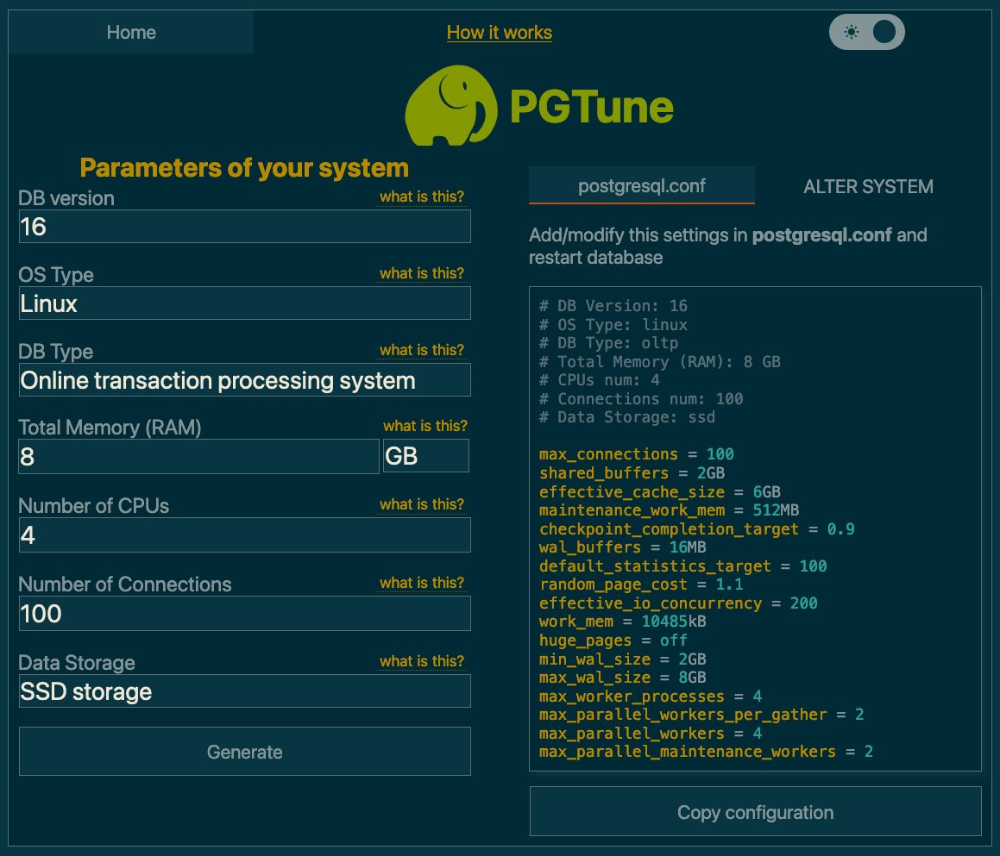

Configuring the database¶
This guide covers choosing, deploying, and tuning a PostgreSQL database for Dependency-Track. For the technical specification (version requirements, required extensions, tuning parameters), see the database reference.
Choosing a hosting solution¶
Depending on available resources, individual preferences, or organizational policies, you will have to choose between a managed or self-hosted solution.
Managed solutions¶
The official PostgreSQL website hosts a list of well-known commercial hosting providers.
Popular choices include:
- Amazon RDS for PostgreSQL
- Aiven for PostgreSQL
- Azure Database for PostgreSQL
- Google Cloud SQL for PostgreSQL
We are not actively testing against cloud offerings. But as a rule of thumb, solutions offering "vanilla" PostgreSQL, or extensions of it (for example Neon or Timescale), will most definitely work with Dependency-Track.
The same is not necessarily true for platforms based on heavily modified PostgreSQL, or even entire re-implementations such as CockroachDB or YugabyteDB. Such solutions make certain trade-offs to achieve higher levels of scalability, which might impact functionality that Dependency-Track relies on. If you'd like to see support for those, please let us know.
Self-hosting¶
Bare Metal / Docker¶
For Docker deployments, use the official postgres image.
Warning
Do not use the latest tag. You may end up doing a major version upgrade without knowing it,
ultimately breaking your database. Pin the tag to at least the major version (for example, 16), or better
yet the minor version (for example, 16.2). Refer to Upgrades for upgrade instructions.
For bare metal deployments, it's usually best to install PostgreSQL from your distribution's package repository. See for example:
- PostgreSQL instructions for Debian
- Install and configure PostgreSQL on Ubuntu
- Using PostgreSQL with Red Hat Enterprise Linux
To get the most out of your Dependency-Track installation, we recommend to run PostgreSQL on a separate machine than the application containers. You want PostgreSQL to be able to leverage the entire machine's resources, without being impacted by other applications.
For smaller and non-critical deployments, it is totally fine to run everything on a single machine.
Upgrades¶
Follow the official upgrading guide. Be sure to select the version of the documentation that corresponds to the PostgreSQL version you are running.
Warning
Pay attention to the fact that major version upgrades usually require a backup-and-restore cycle, due to potentially breaking changes in the underlying data storage format. Minor version upgrades are usually safe to perform in a rolling manner.
Kubernetes¶
We generally advise against running PostgreSQL on Kubernetes, unless you really know what you're doing. Wielding heavy machinery such as Postgres Operator is not something to do lightheartedly.
If you know what you're doing, you definitely don't need advice from us.
Basic tuning¶
You should be aware that the default PostgreSQL configuration is extremely conservative. It is intended to make PostgreSQL usable on minimal hardware, which is great for testing, but can seriously cripple performance in production environments. Not adjusting it to your specific setup will most certainly leave performance on the table.
If you're lucky enough to have access to professional database administrators, ask them for help. They will know your organisation's best practices and can guide you in adjusting it for Dependency-Track.
If you're not as lucky, we can wholeheartedly recommend PGTune. Given a bit of basic info about your system,
it will provide a sensible baseline configuration. For the DB Type option, select Online transaction processing system.

The postgresql.conf is usually located at /var/lib/postgresql/data/postgresql.conf.
Most of these settings require a restart of the application.
In a Docker Compose setup, you can alternatively apply the desired configuration via command line flags. For example:
services:
postgres:
image: postgres:17
command: >-
-c 'shared_buffers=2GB'
-c 'effective_cache_size=6GB'
Advanced tuning¶
For larger deployments, you may eventually run into situations where database performance degrades with just the basic configuration applied. Oftentimes, tweaking advanced settings can resolve such problems. But knowing which knobs to turn is a challenge in itself.
If you happen to be in this situation, make sure you have database monitoring set up. Changing advanced configuration options blindly can potentially cause more damage than it helps.
Below, you'll find a few options that, based on our observations with large-scale deployments, make sense to tweak. Refer to the database reference for the parameter specifications.
Note
Got more tips to configure or tune PostgreSQL, that may be helpful to others? We'd love to include it in the docs. Please raise a PR.
autovacuum_vacuum_scale_factor¶
The default causes autovacuum to start way too late on large tables with lots of churn, yielding long execution times. Reduction in scale factor causes autovacuum to happen more often, making each execution less time-intensive.
The COMPONENT table is very frequently inserted into, updated, and deleted from.
This causes lots of dead tuples that PostgreSQL needs to clean up. Because autovacuum also performs
ANALYZE, slow vacuuming can cause the
query planner to choose inefficient execution plans.
ALTER TABLE "COMPONENT" SET (AUTOVACUUM_VACUUM_SCALE_FACTOR = 0.02);
default_toast_compression¶
lz4 compression is faster and more efficient than pglz,
at the expense of slightly worse compression ratios.
Consider switching to lz4 if you're more likely to be limited by CPU utilisation than storage space.
ALTER SYSTEM SET (DEFAULT_TOAST_COMPRESSION = 'lz4');
wal_compression¶
Enabling WAL compression significantly reduces I/O on write-heavy systems. The cost of slightly increased CPU utilisation is more than worth it.
If your instance is importing BOMs in large volumes and / or high frequency, the WAL will fill up fast, and you'll find yourself limited by I/O. This is particularly true when using HDDs instead of SSDs or NVME storage.
ALTER SYSTEM SET (WAL_COMPRESSION = 'zstd');
Centralised connection pooling¶
For large deployments (that is, upwards of 5 instances), it can become undesirable for each instance to maintain its own connection pool. In this case, you can leverage centralised connection pools such as PgBouncer.
Warning
When using a central connection pooler, you must disable local connection pooling
for all data sources, using dt.datasource.<name>.pool.enabled=false.
Constraints¶
Before proceeding, take note of the following constraints:
- Only
sessionandtransactionpooling modes are supported.transactionis recommended. - Initialisation tasks, which include database migrations, must connect to the
database directly, bypassing the connection pooler, when using pooling mode
transaction. - To prevent concurrent initialisation, session-level PostgreSQL advisory locks are used,
which are not supported with the
transactionpooling mode. - To facilitate this, initialisation tasks can be executed in dedicated containers, and / or using separate data sources.
Example¶
1 2 3 4 5 6 7 8 9 10 11 12 13 14 15 16 17 18 19 20 21 22 23 24 25 26 27 28 29 30 31 32 33 34 35 36 37 38 39 40 | |
Schema migration credentials¶
It is possible to use different credentials for migrations than for the application itself. This can be achieved by configuring a separate data source, and instructing the init tasks to use it:
1 2 3 4 5 6 7 8 9 10 11 | |